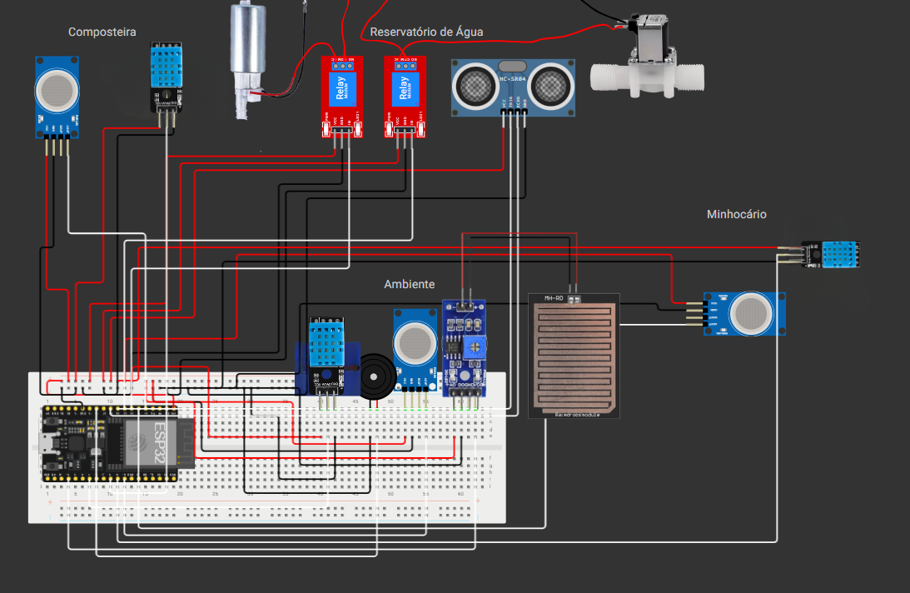
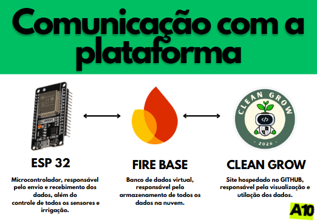

CleanGrow
Sistema IoT que monitora composteira e minhocário e reaproveita água condensada de ar-condicionado para irrigar um viveiro de mudas — de forma automática.
O que é o CleanGrow
O CleanGrow integra sustentabilidade e automação escolar por meio de um sistema IoT (Firebase + ESP32) que monitora uma composteira e um minhocário ao mesmo tempo. Os dados dos sensores são enviados para um Firebase Realtime Database e exibidos em um Site web feito em HTML, CSS e JavaScript puro.
Além do monitoramento, o sistema gerencia o reaproveitamento de água condensada de aparelhos de ar-condicionado para irrigar um viveiro de mudas de forma eficiente e automatizada — fechando o ciclo entre resíduo orgânico, água reaproveitada e novas plantas.
Como funciona
clique em um diagrama pra ampliar


Coleta
Temperatura/umidade, gases, chuva e nível de água — na composteira e no minhocário.
Processamento
Lê os sensores e controla o reaproveitamento da água condensada do ar-condicionado.
Armazenamento
Realtime Database guarda as leituras mais recentes de cada zona, em tempo real.
Automação
Água reaproveitada é direcionada automaticamente para o viveiro de mudas.
O que o Site mostra
- Temperatura e umidade da composteira e do minhocário.
- Nível de gases em cada zona.
- Detecção de chuva via sensor dedicado.
- Status do reservatório de água reaproveitada do ar-condicionado (somente para autorizados).
- Irrigação automatizada do viveiro de mudas (somente para autorizados).
Tecnologias
Fotos
clique em uma foto pra ampliar
.jpg)
.jpg)
.jpg)
.jpg)
.jpg)
.jpeg)